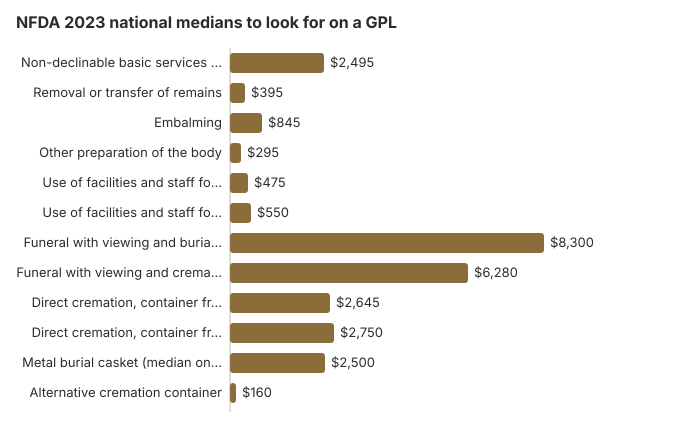

How to Compare Funeral Prices Step by Step
Learn how to effectively compare funeral prices using General Price Lists and smart questions. This guide is designed to give you clear, honest, and compassionate information so you can make these decisions with confidence. Take your time reading; there is no rush, and every family's path is different.
Understanding Funeral Home Price Comparison
Working out funeral costs and end-of-life planning is one of the most challenging things families face after a death. Whether you are dealing with an immediate need for a loved one or plan ahead, having clear, accurate information makes a real difference.
Prices for the same service vary by location and provider, so the most reliable comparison is line by line on each funeral home's itemized General Price List rather than a national survey figure. Federal law, specifically the FTC Funeral Rule, protects consumers by requiring transparency and choice, but many families are unaware of these protections during their time of grief. This guide aims to change that by giving you the knowledge you need to understand the process.
What You Need to Know
Here are the key facts and considerations related to comparing funeral prices:
- Collect two or three General Price Lists from homes in the same area, because the same service can be priced very differently within one city, and many homes lead with bundled packages instead of line-item quotes. Survey data often shows prices vary widely by location, provider, and the specific services chosen, with urban markets usually costing more than rural areas because of overhead and real estate. Independent funeral homes may also offer more flexible pricing than corporate chains.
- You have legal protections: The FTC Funeral Rule requires funeral providers to give you itemized pricing, including the non-declinable basic services fee, lets you choose only the goods and services you want, and protects against deceptive practices. Read our FTC guide
- There is no single right answer; every family's needs, values, and budget are different. Whether you are dealing with the death of a loved one or trying to plan ahead, understanding the funeral planning process and your options helps you make choices you can feel at peace with.
- Help is available: From government assistance programs to community resources, there are options if cost is a concern, especially if you are arranging funeral costs when a loved one is uninsured and need detailed guidance on affordable choices. Explore payment assistance
- Planning ahead saves money and stress: Families who research options before an immediate need arises often pay less and experience less decision-making stress.
- Direct cremation had NFDA 2023 medians of $2,645 with a family-supplied container and $2,750 with the funeral home's, the latest published, while cremation services with ceremonies and full service funerals cost more, and immediate burial can also be a lower-cost alternative to a traditional funeral service. NFDA builds these medians from its member funeral homes' General Price Lists, so roughly half of the homes surveyed charged more than these amounts and half charged less. NFDA's statistics page, updated September 29, 2025, points to the 2025 Cremation and Burial Report projection of a 63.4% United States cremation rate, and that is the share used here. In some states, such as Ohio, direct cremation can start around $1,700, with full cremation services averaging closer to $5,600 in 2026. Cremation vs. burial comparison
- Compare at least 2–3 providers: Use the funeral cost comparison worksheet to organize your research across different funeral homes.
Costs and Pricing
Understanding the financial aspects of compare funeral prices is crucial for making informed decisions. While costs vary by location and provider, here are some general pricing guidelines to keep in mind; for instance, burial costs in Florida in 2026 start around $3,600 for plots, with total funeral expenses varying widely by provider:
Full-service funerals typically range from $3,580 to $9,420, and added choices like a visitation, a casket, or cemetery charges can quickly increase the total by hundreds or thousands of dollars, so many families use a funeral cost calculator to compare cremation, burial, and service prices by state before committing to a provider.
When comparing funeral prices, consider the total picture rather than individual line items. Ask every provider for their complete General Price List, because under the FTC Funeral Rule, funeral homes must provide an itemized list rather than force package-only sales to avoid inflated package deals. The GPL shows prices for every individual service and piece of merchandise, including, for example, the Non-Declinable Basic Services Fee, a standard administrative charge covering arrangements and coordination. Compare similar services side by side, and do not hesitate to ask questions about anything you do not understand. There is no such thing as a silly question when it comes to funeral planning, and skipping optional services can save families real dollars.
Your Consumer Rights
Federal and state laws protect you when making funeral-related decisions:
- FTC Funeral Rule: Requires itemized pricing, prohibits package-only sales, and protects your right to shop around, whether you compare options in person or online. Full FTC guide
- General Price List: Every funeral home must provide this upon request. It is your most powerful tool for comparison shopping. National medians are more specific than broad averages: a traditional funeral with viewing and burial is $8,300, and cremation with a viewing and memorial service is $6,280; direct cremation costs far less than either. Embalming has a median of $845 in the same NFDA 2023 study and is not required by law for most funerals. When there is a visitation or viewing, embalming and cosmetic preparation can add hundreds of dollars to the total. How to compare prices
- No tying arrangements: Providers cannot require you to buy one product in order to get another, and you should look past a low advertised price to what you may actually pay once charges for a casket, viewing-related preparation, and cemetery costs are added.
- Third-party merchandise: Funeral homes must accept caskets and urns purchased elsewhere and cannot charge a fee for using them (16 CFR § 453.4(b)(1)); the casket is often the largest single item in a traditional funeral, with an NFDA 2023 median of $2,500 for a metal casket.
- Truth in representation: Providers cannot make false claims about legal requirements for services like embalming, and they typically handle required permits as part of the arrangement process. Cremation can also avoid ongoing cemetery maintenance fees.
If you believe your rights have been violated, contact the Federal Trade Commission, your state attorney general, or the Funeral Consumers Alliance.
Practical Steps You Can Take
- Gather information: Read guides like this one and note questions you want to ask providers, including who will prepare permits and paperwork
- Request General Price Lists; Call or visit 2-3 providers and request their itemized pricing, including any charges tied to the body, transportation, or use of a crematory
- Compare carefully: Look at similar services across providers, note significant price differences, and ask for the cost of each death certificate and related permits since handling some paperwork yourself may reduce charges where state law allows
- Ask questions; Do not hesitate to ask for clarification on any charge or service, and remember that funeral providers must disclose cash advance fees in writing under the FTC Funeral Rule
- Explore assistance options: Check for veteran benefits, Social Security, Medicaid, or other programs.
- Take your time; Unless there is an immediate need, take the time you need to make decisions that feel right.
- Consult professionals: For legal, financial, or medical questions, always consult licensed professionals.
- Document decisions: Write down your wishes and share them with family members and your estate planner, and remember you can legally buy a casket or urn online or from a third-party dealer without extra fees or penalties
Educational Resources
- Funeral Consumers AllianceIndependent nonprofit consumer advocacy for funeral rights
- FTC Funeral RuleThe federal rule protecting funeral consumers
- Funeral Insurance GuideCompare final expense and burial insurance options
- Best Burial Insurance CompaniesSide-by-side comparison of top burial insurance providers
- Payment Assistance GuideGovernment programs and financial help for funeral costs
- Insurance Plan ComparisonCompare coverage, premiums, and payout speed across providers
Compare Funeral Costs for Your Loved One
- Average Funeral Cost in 2026National cost breakdown with real prices
- Cremation vs. Burial Cost ComparisonSide-by-side price comparison to help you decide
- Funeral Cost BreakdownEvery line item explained: know what you're paying for
- Cheapest Funeral OptionsLower-cost alternatives, with typical price ranges
- Direct Cremation: Most Affordable OptionNFDA 2023 median $2,645 with a family-supplied container (latest available)
- How to Compare Funeral PricesStep-by-step guide to getting the best price
Use the NFDA median lines as a checklist, not as a quote
Comparing funeral prices is a paperwork job. The FTC already requires the paperwork. This price-comparison guide walks through a phone call using the national median lines from the NFDA 2023 General Price List Study so you know which rows to ask for. The medians are not what your funeral home must charge.
What the 2023 study actually measured
NFDA mailed and emailed its member funeral homes in July 2023 and published the results on December 8, 2023. The medians below are from that release and from the same study as reprinted in the 2024 NFDA Cremation and Burial Report. NFDA has not published a newer national GPL study; its statistics page still cited these 2023 figures as of September 29, 2025. That is why this site labels them latest available.
| GPL line | 2023 median |
|---|---|
| Non-declinable basic services fee | $2,495 |
| Removal or transfer of remains | $395 |
| Embalming | $845 |
| Other preparation of the body | $295 |
| Use of facilities and staff for viewing | $475 |
| Use of facilities and staff for a ceremony | $550 |
| Funeral with viewing and burial, metal casket, no vault | $8,300 |
| Funeral with viewing and cremation | $6,280 |
| Direct cremation, container from the family | $2,645 |
| Direct cremation, container from the funeral home | $2,750 |
| Metal burial casket (median on the GPL) | $2,500 |
| Alternative cremation container | $160 |

Source: NFDA, December 8, 2023, and the 2024 NFDA Cremation and Burial Report's reprint of the 2023 GPL table. Half of the surveyed homes charged less than the median and half charged more. Cemetery plots, vaults, flowers, and obituaries were not in the $8,300 figure.
The phone script
- Ask for the General Price List. Under 16 CFR § 453.2, a funeral provider must tell you prices over the telephone. You do not have to give your name.
- Ask for direct cremation with the container the funeral home supplies, and again with a container you supply. Write down both.
- Ask for the basic services fee, the transfer fee, and the embalming fee as separate numbers. The basic services fee is the one line you generally cannot decline if you use that firm for any arrangement.
- Ask for the casket price list. The median metal casket in the 2023 study was $2,500. An outside casket must be accepted with no handling fee (16 CFR § 453.4). We do not cite a percentage discount for online caskets, because NFDA did not survey retailers.
- Call two more homes the same day and use the same wording. Our worksheet is the form for that. We do not claim the worksheet saves a set dollar amount. Homes in one city often differ; that is the reason to call, not a guaranteed refund.
Package prices hide the comparison
A "traditional package" adds the lines above to a casket and sometimes to items you can decline, such as embalming, a visitation, printed cards, and a limousine. Ask the director to point to each package item on the General Price List. If a line is not legally required, you can remove it. Embalming is not required by the Funeral Rule, and no state requires it in every case. Refrigeration is the usual alternative when there will be no viewing.
When you have three lists, circle the basic services fee first. That single number explains more of the gap between homes than the casket does. Then compare direct cremation, because it is the cleanest like-for-like row. Only then compare caskets, and only of the same material.
Sources for this section, checked October 22, 2026: NFDA 2023 GPL release; 16 CFR Part 453. Educational only. Confirm the forms, fees, and eligibility discussed on How to Compare Funeral Prices Step by Step with the agency or a licensed professional.
Frequently Asked Questions
What is covered in this Compare Funeral Prices guide?
This guide provides comprehensive, educational information about compare funeral prices including costs, options, consumer rights, and practical steps. It also explains common decisions involving the handling of remains, from burial and cremation to alternatives like donation. All information is for educational purposes only.
How current is this information?
This guide was last reviewed in March 2026. We regularly update our content based on the latest data from industry sources, government agencies, and consumer research.
Where can I get personalized advice?
For specific decisions about your situation, always consult with licensed professionals, such as attorneys for legal matters, financial advisors for insurance questions, and licensed funeral directors for service planning.
Is this information free to use?
Yes, all guides on Funeral Cost Analyzer are free and available without registration. We provide independent educational resources to help families make informed decisions.
How much does the average funeral cost in the United States?
Based on survey-based national cost data, the median cost of a funeral with burial is approximately $8,300, while a funeral with cremation averages $6,280. In the same NFDA study, the latest available, direct cremation had a median of $2,645 when the family supplied the container and $2,750 when the funeral home did. If you plan a traditional burial, many cemeteries require an outer container, such as burial vaults or a grave liner, which can add to the total cost. Costs vary significantly by state and provider; for example, Alabama funeral costs in 2026 range from about $1,800 to $6,400 depending on the services chosen.
What are my consumer rights when arranging a funeral.?
The FTC Funeral Rule protects all consumers. Funeral homes must provide itemized pricing, allow you to choose only the services you want, accept caskets purchased elsewhere, and refrain from misrepresenting legal requirements. You also have flexibility to plan a memorial service or ceremony at a different time or place to honor your loved one. You have the right to a General Price List from any funeral home upon request.
Disclaimer: Information only, not professional advice. Full disclaimer.